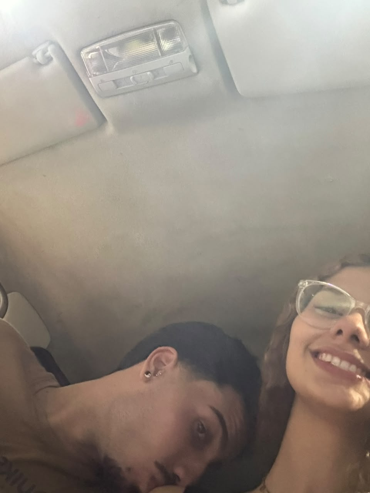
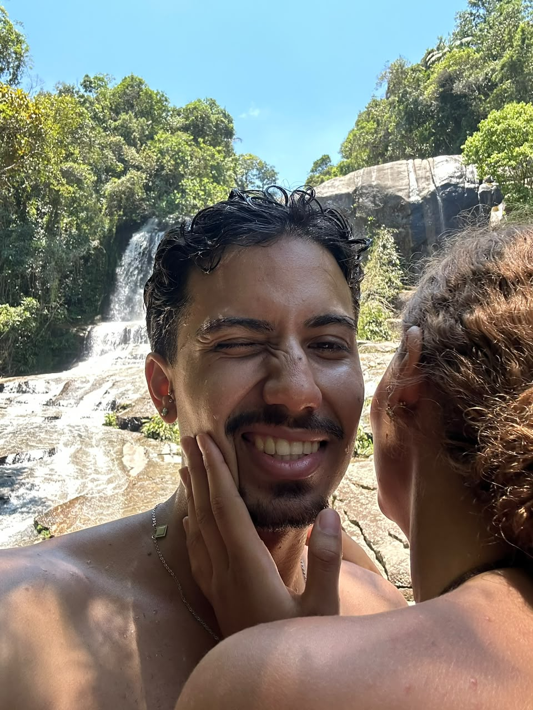
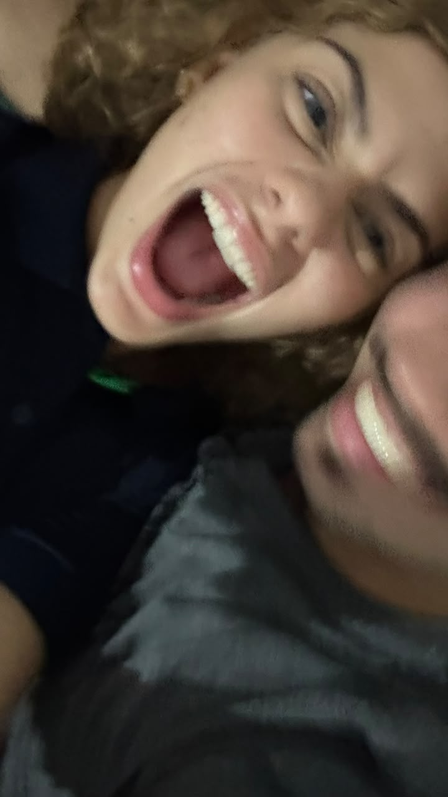
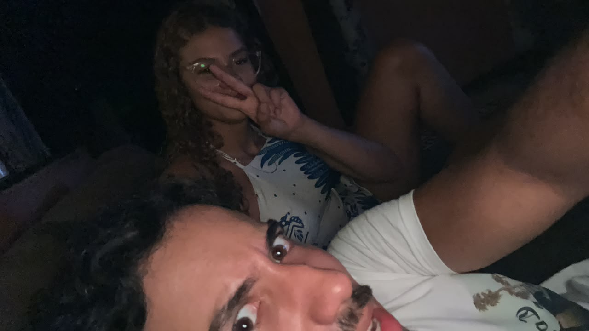
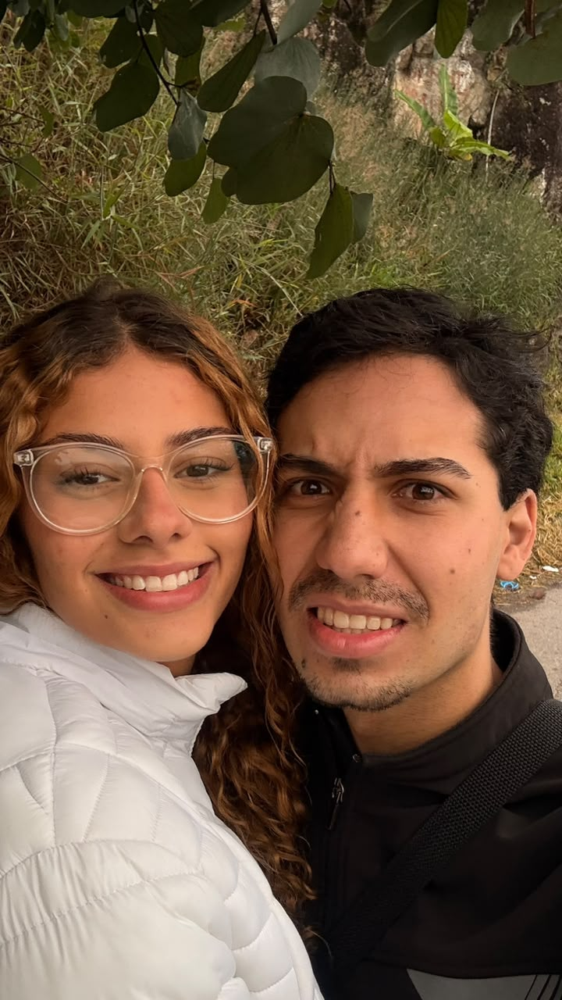
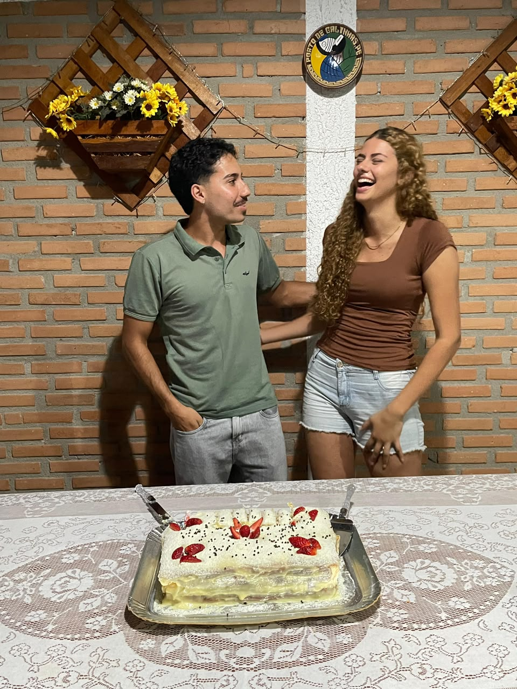
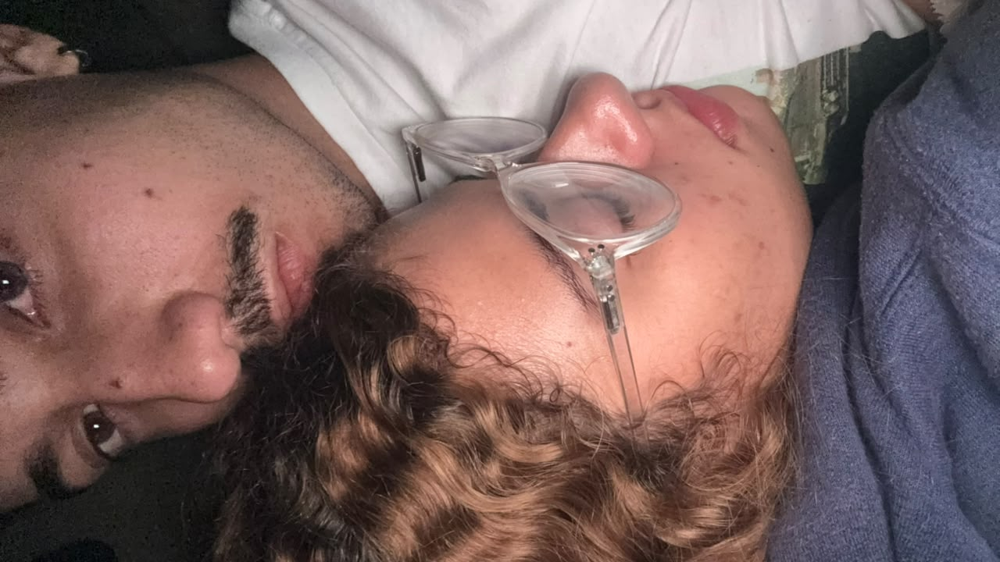
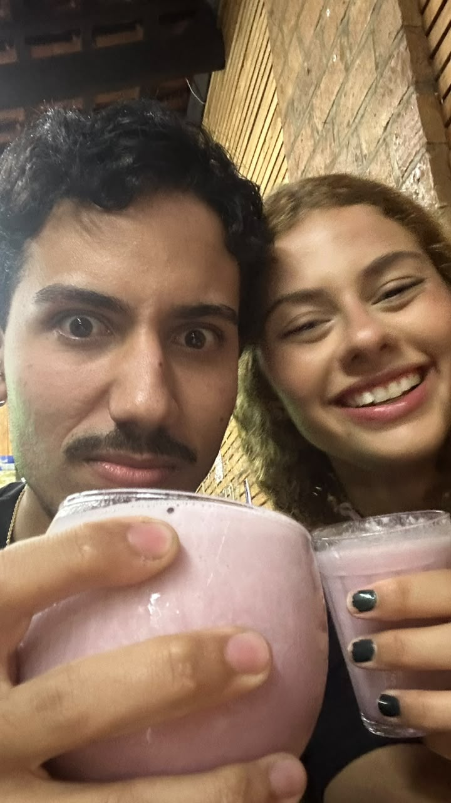
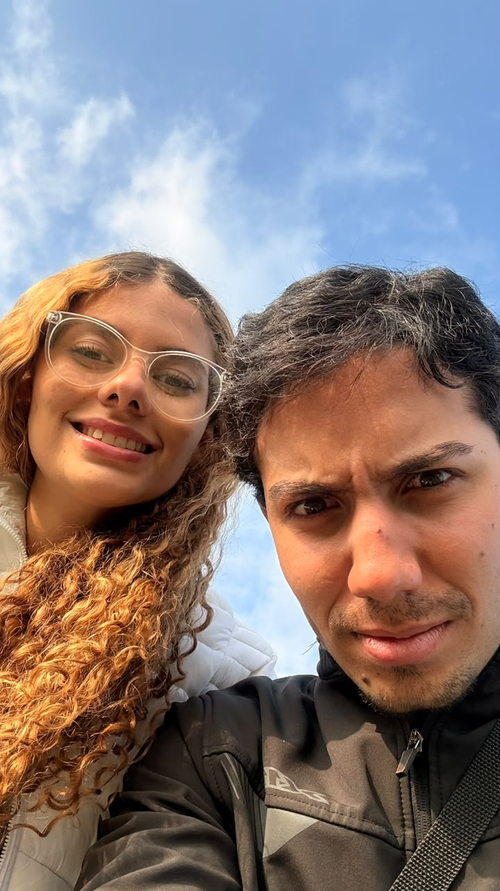
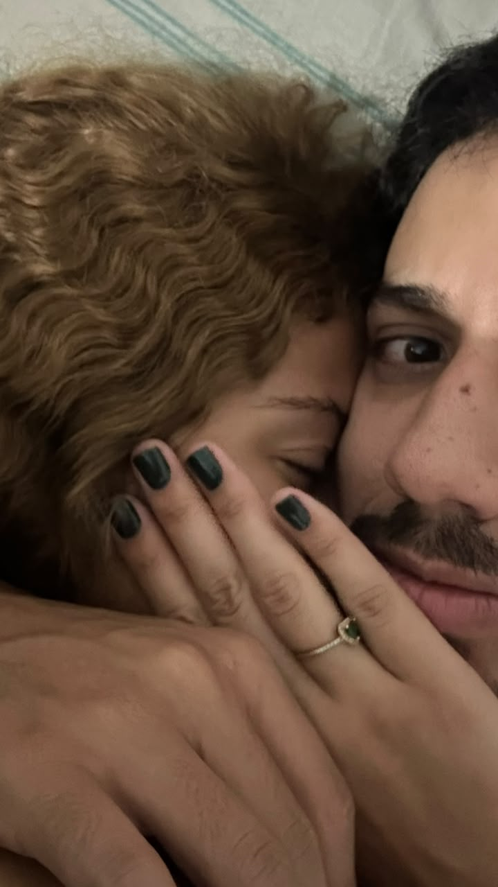

Quem diria que uma conversa despretensiosa mudaria tanto a minha vida?
Tudo começou na Avenida Itália. Um lugar que provavelmente não aparece em muitas histórias de amor. Eu estava longe de ser a pessoa mais sensata daquela avenida naquele dia e, por algum motivo, achei razoável dizer que te amava, que a gente iria casar e até qual vestido você usaria. Hoje eu rio quando lembro disso. Mas existe algo bonito em pensar que, desde o primeiro instante, eu já sentia que você era diferente.

Ainda não éramos nós. Mas talvez a nossa história já tivesse começado ali. ❤️
Existe uma pergunta que eu me faço até hoje. Como você confiou em mim? Eu estava aparentemente bêbado. O Vitor estava junto. E mesmo assim você entrou no carro. Hoje eu cheguei à conclusão de que você foi muito corajosa. Ou muito doida. Talvez um pouco dos dois. 😂
Depois daquele primeiro dia, a vida seguiu. Nós nos afastamos. Paramos de conversar. E parecia que aquela história tinha terminado antes mesmo de começar. Mas tivemos sorte. Porque a vida resolveu nos colocar no caminho um do outro mais uma vez. E foi aí que tudo realmente começou.
Foi no Garden que grande parte da nossa história começou a ser escrita. Entre conversas, açaís e tardes que passavam rápido demais, fomos nos conhecendo aos poucos. Eu voltava cheio de picadas. Com dor nas costas. Mas sempre feliz. Porque era você quem estava ao meu lado.

Algumas das minhas lembranças favoritas nasceram nessas tardes. ☀️
Existe um acontecimento histórico que não pode ficar de fora. O famoso casal do Garden. Até hoje eu não sei exatamente o que estava acontecendo. Mas sei que eles renderam uma das histórias mais engraçadas que temos. Obrigado por esse momento inesquecível, casal desconhecido. 😂
Eu demorei para me aproximar. Demorei para criar coragem. E quando finalmente te beijava... Você começava a rir. Eu ficava completamente perdido. Sem entender o que estava acontecendo. Hoje eu percebo que essa risada acabou se tornando uma das minhas coisas favoritas em você. E sinceramente? Eu não mudaria isso por nada.

A responsável por todas as minhas dúvidas existenciais. 😂❤️
Depois de tantas tardes no Garden, chegou o dia de assistir um filme lá em casa. Meus pais estavam na roça. E eu realmente achei que a nossa maior preocupação seria escolher o que assistir. Você claramente tinha uma programação diferente em mente. Desde aquele dia eu aprendi uma coisa: por trás dessa carinha tranquila existe alguém muito mais arteira do que gosta de admitir. E eu descobri isso cedo. ❤️

Ela parece inocente nessa foto. Eu já sabia a verdade. 😌❤️
Depois daquele dia, meus pais finalmente conheceram você. E antes mesmo de conhecerem sua personalidade, já tinham reparado em uma coisa: você é alta. Muito alta. E até hoje ninguém da família conseguiu entender como alguém de 1,78m usa um pé 36. A ciência continua procurando respostas. 😂

Fenômeno ainda não explicado pela humanidade. 📏❤️
Eu dizia para mim mesmo que não queria namorar. Mas quanto mais tempo passava com você, mais difícil ficava acreditar nisso. Porque era leve. Era divertido. Era simples. E era você. Então chegou um momento em que eu já não tinha mais escolha. Eu tinha me apaixonado.
Não aconteceu em um restaurante. Não teve discurso ensaiado. Nem cenário perfeito. Estávamos deitados. Conversando. E eu simplesmente te pedi em namoro. Porque naquele momento eu já sabia que queria você na minha vida. E até hoje continuo tendo a mesma certeza.

Às vezes os momentos mais simples acabam sendo os mais especiais. ❤️
Depois veio outro desafio. Conhecer oficialmente a sua família. Principalmente seu pai e seu irmão. Duas pessoas extremamente receptivas. Pelo menos essa é a versão que eu conto quando eles estão por perto. 😂 Mas no fundo eu gosto muito de fazer parte da sua família também.
Algumas pessoas sonham com viagens. Outras sonham com casas enormes. Nós sonhamos com algo muito mais simples. Um apartamento. Um sofá confortável. E a oportunidade de passarmos todos os dias juntos.

Talvez ninguém entenda. Mas nós entendemos. 🛋️❤️
Eu gosto de imaginar o nosso futuro. E curiosamente, quase todas as vezes ele termina da mesma forma. Nós dois sentados em um sofá. Assistindo alguma série. Discutindo qual filme escolher. Pedindo comida. Conversando sobre o dia. Parece algo simples. Mas para mim esse sofá representa muito mais. Ele representa paz. Companhia. Rotina. Lar. Porque quando penso no futuro, não penso apenas em um apartamento. Penso na vida que vamos construir dentro dele. E você está em todos os planos.

Curiosamente, nossa história começou na Avenida Itália. Mas o nosso futuro sempre termina no sofá. ❤️
O começo de uma história que eu ainda quero viver por muitos anos.
Você transformou momentos simples em lembranças especiais.
Seu sorriso continua sendo uma das minhas coisas favoritas.
Algumas fotos guardam memórias. Essa guarda uma fase inteira da minha vida.
Ainda tentando entender a matemática do 1,78m com pé 36.
Toda vez que olho para essa foto eu lembro o quanto gosto da sua companhia.
Você é a parte favorita de muitas das minhas melhores lembranças.
Eu gosto dessa foto porque ela parece exatamente a gente.

Momentos que eu nunca quero esquecer.

E essa é só uma pequena parte da nossa história.
Bia, Obrigado por todas as conversas. Pelos açaís. Pelas risadas. Pelas memórias. E por transformar momentos simples em lembranças que eu vou guardar para sempre. Ainda estamos escrevendo os primeiros capítulos da nossa história. Mas, se depender de mim, ela terá muitas páginas pela frente. Porque entre todos os lugares onde eu poderia estar, o meu favorito continua sendo ao seu lado.
E se alguém tivesse me contado, naquele dia na Avenida Itália, que aquela menina se tornaria uma das pessoas mais importantes da minha vida, eu provavelmente teria acreditado. Afinal, eu já estava falando em casamento desde o primeiro dia. Só não imaginava que, além de encontrar uma namorada incrível, eu também encontraria alguém para dividir comigo o sofá dos meus sonhos.
Obrigado por cada passeio. Por cada conversa. Por cada abraço. Por cada risada no meio dos beijos. E principalmente por ser exatamente quem você é.
Com todo meu amor,
Matheus ❤️